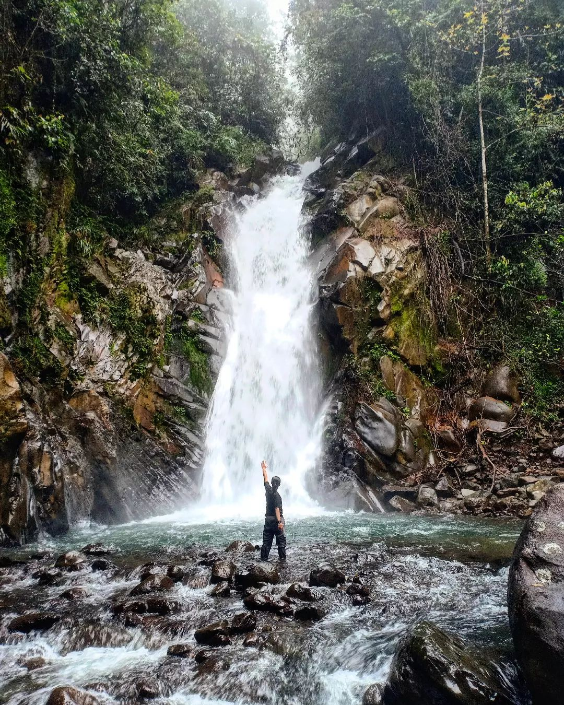
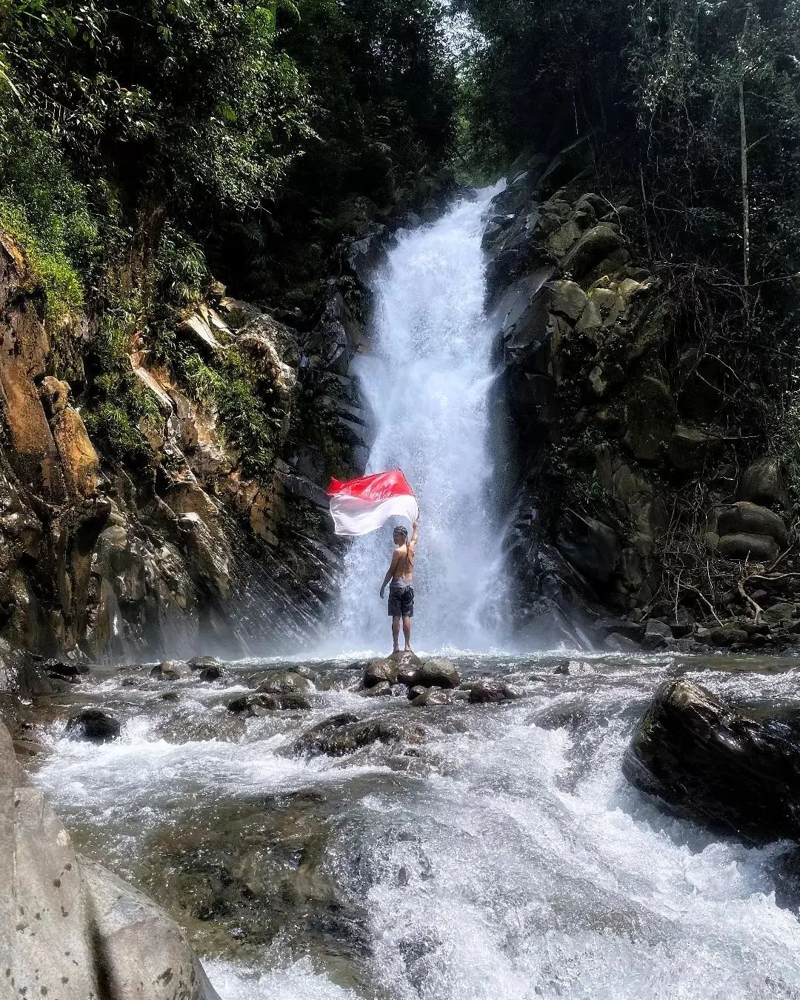

CURUG CIDURIAN
Curug Cidurian berada didalam kawasan Taman Nasioanl Gunung Halimun Salak (TNGHS). Curug ini memiliki ketinggian sekitar 24 meter dengann debit air yang cukup besar.
Cocok untuk pecinta alam dan pendaki, karena memiliiki track yang sangat menantang, terjal, masuk kedalam hutan TNGHS, jarak tempuh sekitar 1,5 km dengan durasi waktu 45 menit anda sudah sampai dan dapat menikmati keindahan alam curug/air terjun Cidurian



Penasaran? yuk langsung cusss ke Curug hits ini!